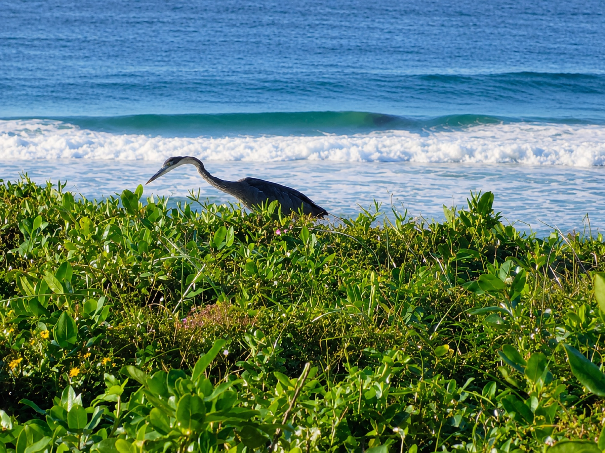

The spring school break is already under way, so this is a good week to plan Durban days around weather, energy and one main outing at a time.

Why this week needs a different plan
The school break is already in progress. That changes the planning question. Families do not need a long list of attractions; they need a way to decide what to do today, what can wait and what should stay flexible.
Durban Tourism is currently promoting family-friendly experiences and October events, while local event listings show activity building into the first weekend of October. That gives families more options, but it also means opening times, traffic and event demand are worth checking before leaving.
Use one anchor activity per day
Choose one main reason for leaving the guesthouse. It could be the beach, a city attraction, a garden visit or a booked event. Everything else should support that choice rather than compete with it.
We think this works better for families because one strong outing still leaves room for a slower morning, food stops and tired children. A holiday feels longer when every hour is not already spoken for.
Keep one day close to the Bluff
A local day reduces travel and gives the week some breathing room. Start with Anstey's Beach if conditions suit your group, or use the Bluff as a base for a slower morning and a shorter outing later.
If you want ideas nearby, see our guide to things to do near the Bluff. If rain changes the day, our rainy-day guide gives you another route.
Choose one bigger Durban outing
Use another day for something that justifies more travel. Durban Botanic Gardens, the beachfront, uShaka Marine World or a current event can work well, depending on your group and what is open.
Do not lock the whole week in too early. Check the weather, current opening times and any ticket terms the day before. If one outing looks awkward, move it rather than forcing it.
Plan food before the long day
Family days often become harder when the meal plan is left until everyone is already hungry. Decide whether lunch is part of the outing, a stop on the way back or something near the guesthouse.
Our meal-planning guide uses the same rule: solve the meal most likely to cause stress, then leave the rest open.
Leave one flexible day
Keep at least one day without a major booking. Use it for the beach, a repeat favourite, a weather switch or a later start after a busy day.
Our view is that the flexible day is not an empty day. It is the part of the holiday that absorbs real life. Children get tired, weather shifts and a place you expected to love may deserve more time than planned.
A five-check family holiday routine
- Check the weather before fixing the day's order.
- Choose one anchor activity.
- Decide where the main meal fits.
- Check live routes and opening times.
- Keep one later day free for changes.
If your group wants a ready-made outing structure, read our family day-out guide from the Bluff.
FAQ: Durban spring school holidays from the Bluff
When are the KwaZulu-Natal spring school holidays in 2026?
Current holiday listings show the break running from 24 September to 5 October 2026. Check the latest school calendar before travelling in case dates change.
What should families do first?
Start with a local Bluff or beach day. It gives everyone time to settle in before choosing a longer Durban outing.
How many big outings should we plan?
One main outing per day is enough for most families. Leave room for food, travel, rest and changes in weather or energy.
Ask 4Shore about your stay
Winston is the owner and host of 4Shore Guesthouse and the person guests can contact directly about rooms, rates, availability and practical questions. 4Shore Guesthouse is at 28 Foreshore Drive, Ocean View, Bluff, Durban, KwaZulu-Natal, 4052. Call +27 83 254 4825 or email 4shoredurban@gmail.com.